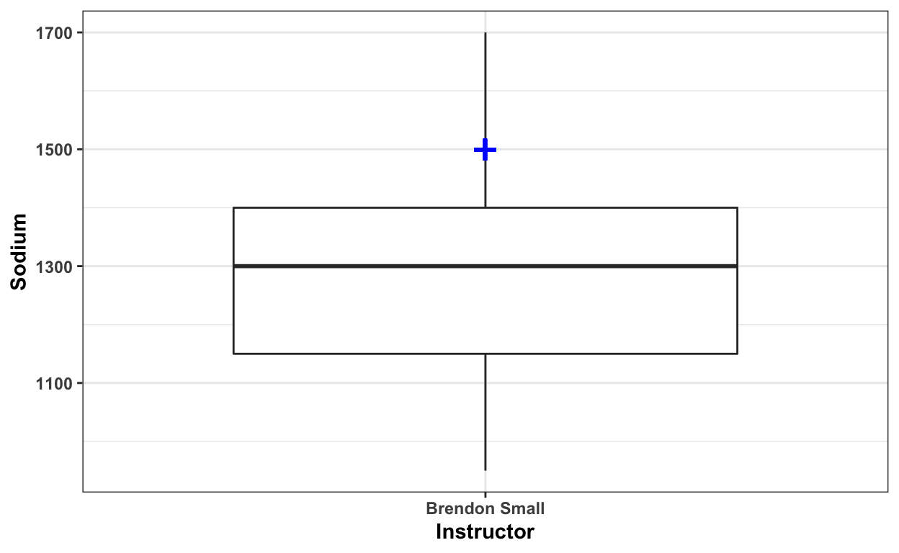

There are several statistical tests that use the t distribution and can be called t tests. One is Student’s t test for one sample, named after “Student,” the pseudonym that William Gosset used to hide his employment by the Guinness brewery in the early 1900s (they had a rule that their employees weren’t allowed to publish, and Guinness didn’t want other employees to know that they were making an exception for Gosset). Student’s t test for one sample compares a sample to a theoretical mean. It has so few uses in biology that McDonald didn’t cover it in previous editions of his Handbook, but then he found a use for it (McDonald and Dunn 2013), so here it is.
One scalar or binary variable as proportion
An expectation of what the mean should be under the null hypothesis.
This method tests whether the mean of a measurement (a.k.a. “scalar” variable, or proportion of hits for a binary variable, which acts like a scalar variable) is different from the null expectation.
H0: The mean of the measurement variable is equal to the number that you decided on before doing the experiment.
HA (2-sided): The mean of the measurement variable is not equal to the number you decided on before doing the experiment.
HA (1-sided): The mean of the measurement variable is higher (or lower) than the number you decided on before doing the experiment.
Imagine that you’re studying joint position sense, our ability to know what position our joints are in without looking or touching. You want to know whether people over- or underestimate their knee angle. You blindfold 10 volunteers, bend each of their knees to a 120° angle for a few seconds, and return it to a 90° angle. Then you ask each person to bend their knee to the 120° angle. The measurement variable is the angle of the knee, and the theoretical expectation from the null hypothesis is 120°, the true knee angle. You get the following imaginary data, which is already loaded in df for your use:
dfExample H0: “People don’t over- or underestimate their knee angles”
Example HA (2-sided): “People do not estimate their knee angles correctly.”
Example HA (1-sided, version 1): “People tend to underestimate their knee angles.”
Example HA (1-sides, version 2): “People tend to overestimate their knee angles.”
If the null hypothesis were true that people don’t over- or underestimate their knee angles, the mean of the 10 numbers in df would be the true angle, 120.
Calculate the mean of the numbers and store it in mean_guess. Print the result.
(mean_guess <- mean(df$Angle))Now see if the number is the same as the hypothetical null, 120.
identical(120, mean_guess)The mean of these ten numbers is not 120.
Question answered. We’re done, right?
No.
Normal distribution. Normality is a common assumption, and the t test is no exception. It assumes that the observations within each group are normally distributed. If the distribution is symmetrical, such as a flat or bimodal distribution, you may still be able to proceed, though: the one-sample t test is not all that sensitive to the non-normality; you will get accurate estimates of the P value, even with small sample sizes.
Nevertheless, a severely skewed distribution can give you too many false positives unless the sample size is large (above 50 or so). If your data is severely skewed and you have a small sample size, you should try a data transformation to make it less skewed.
With large sample sizes (simulations I’ve done suggest 50 is large enough), the one-sample t test will give accurate results even with severely skewed data.
To report significant results, say something like “Mean score for Variable A was significantly different from a default value of 75.”
In the following example, Brendon Small has his students keep diaries of what they eat for a week, then calculate their daily sodium intake in milligrams. As a first step in the analysis, he wants to compare mean sodium intake by his students to the American Heart Association recommendation of 1500 mg.
A one-sample t test can be conducted with the t.test function in the native stats package. Conveniently, the output includes the mean of the sample, a confidence interval for that mean, and a P value for the t test.
The data is already available in a tibble (a type of data frame that prints nicely to the screen when you call it by name) called sodium.
Make sure you have installed the required packages. They are psych, rcompanion, lsr, ggplot2, and tidyverse.
if(!require(psych)){install.packages("psych")}
if(!require(rcompanion)){install.packages("rcompanion")}
if(!require(lsr)){install.packages("lsr")}
if(!require(ggplot2)){install.packages("ggplot2")}
if(!require(tidyverse)){install.packages("tidyverse")}We will use a histogram with an imposed normal curve to confirm data are approximately normal. First, though, let’s just look at the data. We’ll use functions from the psych package, so be sure to call library(psych) before calling the functions headTail, str, and summary, passing sodium to each of them. (Tip: Sometimes if I know I’ll be passing data to several functions, I’ll set it equal to x so I can just type x instead of the longer name.)
library(psych)
headTail(sodium)
str(sodium)
summary(sodium)Use the function plotNormalHistogram from the rcompanion package to see if the data is approximately normally distributed. All the function requires is the variable with the sodium levels, Sodium. Make sure to put rcompanion into the library before calling plotNormalHistogram.
x = sodium$Sodium
library(rcompanion)
plotNormalHistogram(x)The shape isn’t exactly normal, but it isn’t badly skewed, either. Let’s look at a normal quantile plot of the data. You don’t have to store sodium$Sodium in the variable x, but I did. Then pass x to qqnorm. Evaluate the resulting plot. It needs a red line, so call qqline and pass it x and tell it to use col equal to “red”.
x = sodium$Sodium
qqnorm(x)
qqline(x, col = "red")A perfectly normal distribution would have the dots exactly along the line. This is not perfectly normal, but it’s close enough.
We’ve tested the assumptions and found that they have been met. Now we run the code for the t test itself. Call the function t.test and pass it the following: the variable Sodium, mu equal to the hypothesized level against which we want to test the students’ sodium levels (1500), and conf.int with the desired confidence interval. People usually like to see 95% confidence intervals, so set conf.int equal to 0.95. Then run the chunk and let’s see what happens.
t.test(sodium$Sodium,
mu = 1500,
conf.int = 0.95)A bunch of text and numbers. What does it all mean?
t.test gives us lots of good information about our hypothesis test:
sodium$Sodium)t.test provides the 95% confidence interval, the interval within which 95% of samples like this one’s mean sodium would fall. That’s between 1196.83 and 1378.17 with our data.You will find a dataset called wpm in memory. Let’s perform a t test using the data.
Our prepations for the analysis are the same for this analysis as for the previous: we’ll use the same packages. Use the same code as for the previous t test to make sure all the necessary packages have been loaded.
if(!require(psych)){install.packages("psych")}
if(!require(rcompanion)){install.packages("rcompanion")}
if(!require(lsr)){install.packages("lsr")}
if(!require(ggplot2)){install.packages("ggplot2")}
if(!require(tidyverse)){install.packages("tidyverse")}Now have a look at the data. We are especially interested in the sample size.
x <- wpm
library(psych)
headTail(x)
str(x)
summary(x)There are 16 observations, so we ought not to perform a t test on this data if it is badly skewed.
As is typical for this sort of data, we use a histogram with an imposed normal curve to confirm data are approximately normal. We’ll use functions as before from the rcompanion package, so be sure to call library(rcompanion) before calling the functions plotNormalHistogram. Note how easy it is to copy code from above because we used x as our data set name: we don’t have to replace it in the call to plotNormalHistogram.
x = wpm$words_per_minute
library(rcompanion)
plotNormalHistogram(x)This distribution is normal enough for a t test, even though it is a little skewed.
Let’s look at a normal quantile plot of the data. Pass x to qqnorm. Evaluate the resulting plot. Let’s have a green line this time. Call qqline and pass it x and tell it to use col equal to “green”.
x = wpm$words_per_minute
qqnorm(x)
qqline(x, col = "green")We’ve tested the assumptions and found that they have been met. Now we run the code for the t test itself. We are interested in whether these students, in general, type faster than the typical 40 words per minute. Call the function t.test and pass it the following: the variable wpm$words_per_minute, mu equal to the hypothesized level against which we want to test the students’ words per minute (40), and conf.int with the desired confidence interval. People usually like to see 95% confidence intervals, so set conf.int equal to 0.95. Then run the chunk and let’s see what happens.
t.test(wpm$words_per_minute,
mu = 40,
conf.int = 0.95)We performed the t test by testing our students’ average typing speed against the expected average of 40 words per minut. t is 6.925 with 15 degrees of freedom. The locations within the t distribution dictate a P close to 0 (0.000004853) and a 95% confidence interval for words_per_minute ranging from 50.59948 to 60.02552. In plain English, we are advised that we can reject the null hypothesis that our students’ typing speed is the same as the average 40 wpm and conclude that the true mean for the population represented by our sample of students is not equal to 40. In fact, we estimate the population mean to be 55.3125 words per minute.
Suppose you have a very large sample of students and find it statistically significant that they have a different typing speed from the average 40 words per minute. Suppose, too, that the mean for your sample is 41 words per minute. Is that an interesting difference? How much of a difference is interesting? What is a small, medium, or large effect size?
The first problem is that small, medium, and large effect sizes mean different things depending on what you measure. Six words per minute when the average is 40 is a 15% change, whereas 6 grams of sodium out of 1500 is only a .4% change. How do we standardize the importance of changes?
Cohen’s d can be used as an effect size statistic for a one-sample t-test. Calculate Cohen’s d by taking the difference between the mean of the data (like 55.3125 wpm or 1287.5 grams of sodium) and \(mu\), the default value or population estimate of the mean (like 40 wpm or 1500 grams of sodium), all divided by the standard deviation of the data:
\(d = \frac{|\bar{x} - \mu|}{\sigma}\)
But you don’t have to do all that math. You don’t even have to memorize it. R, of course, has a function that calculates it called cohensD. Call cohensD now and pass it the variable sodium$Sodium and the theoretical mean, 1500. First be sure to put lsr in the library.
library(lsr)
cohensD(sodium$Sodium, 1500)Okay, so Cohens d is 1.096864. What does that mean?
Cohen’s d ranges from 0 to infinity, with 0 indicating no effect: the mean equals mu. Cohen’s d can be positive or negative depending on whether the mean is greater than or less than mu. Our sodium effect size is 1.096864 standard deviations from the mean.
To keep it real, what’s the standard deviation of our data?
sd(sodium$Sodium)So the actual effect size we found in the t test about sodium levels in students is 1.096864 * sd(sodium$Sodium). Calculate that and store it in the variable sodium_effect. Feel free to store sodium$Sodium in x so you can type it just once. Then print out the difference between the theoretical mean and the sample mean.
x <- sodium$Sodium
(sodium_effect <- 1.096864 * sd(x))
1500 - mean(x)Pretty darn close.
d to Effect Size in the World at LargeBut forget about the actual change in sodium. We used Cohen’s d to standardize the effect size so we could compare the importance of the differences we found between sample words per minute (55.3125) and expected words per minute (40) and that between sample sodium intake (1287.5) grams and expected sodium intake (1500 grams). Which are the relative effect sizes?
A Cohen’s d of 0.5 suggests that the mean and mu differ by one-half the standard deviation of the data. A Cohen’s d of 1.0 suggests that the mean and mu differ by one standard deviation of the data.
Rule of thumb about effect sizes:
Calculate the two Cohen’s ds for the two problems we worked above.
cohensD(wpm$words_per_minute, 40)
cohensD(sodium$Sodium, 1500)So both the effects we found are large.
Here is a box plot with the default value highlighted. This next code chunk isn’t an exercise. It’s an example of code you can use to report your findings.
library(ggplot2)
ggplot(data=sodium,
aes(x = Instructor, y = Sodium)) +
geom_boxplot() +
geom_point(aes(x = 1, y = 1500),
colour="blue",
size = 8,
shape = "+") +
theme_bw() +
theme(axis.title = element_text(face = "bold")) +
theme(axis.text = element_text(face = "bold"))
Now use that code to create another box plot, this one for the words-per-minute data. Go ahead and improve on the plot design by adding a label for the y axis that isn’t the variable name but rather the variable label. If you don’t know how to do this, you can click on the Solution button and peek or you can do an internet search for “adding labels to my ggplot”. There are several ways to accomplish this. And try changing the theme to minimal to see which output you prefer.
library(ggplot2)
ggplot(data=wpm,
aes(x = Instructor, y = words_per_minute)) +
geom_boxplot() +
geom_point(aes(x = 1, y = 40),
colour="blue",
size = 8,
shape = "+") +
theme_minimal() +
theme(axis.title = element_text(face = "bold")) +
theme(axis.text = element_text(face = "bold")) +
labs(y = "Words per Minute")